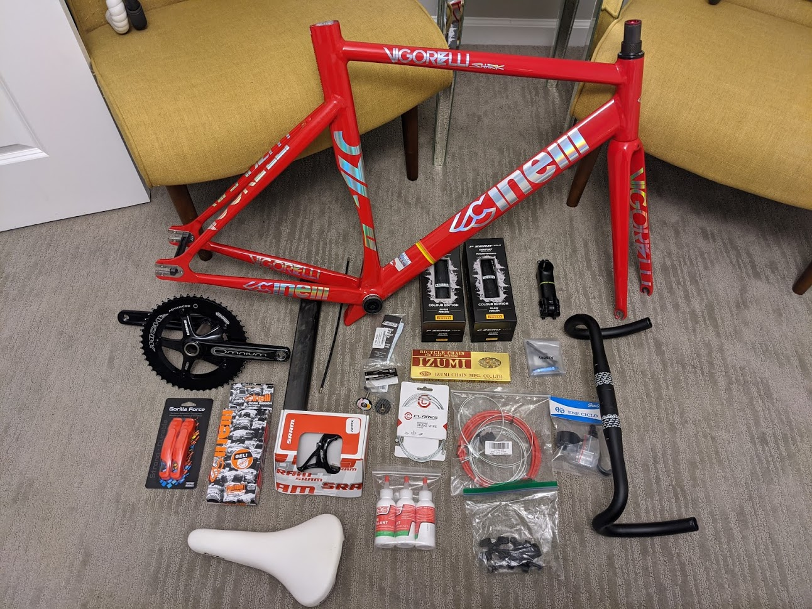

[17-11-2020] | Cinelli Track Bike Build
Bikes are great, because if they break down you can just walk home instead of having to call a tow truck while you hang your head on the side of the highway and while all your coworkers drive past pointing and laughing.
This is my Cinelli Vigorelli shark. I've been looking into track framesets for a few months, and I had the 2 Walmart frames for a couple years. I put a hail mary bid in on eBay and happened to win the auction. After it got lost in the mail for a week, it finally arrived.
The goal with this build was to go from my Kent Thruster frame to something with significantly upgraded parts, so that I could do an instant side by side comparison of absolute bottom of the barrel components to the most reasonably priced high end track bike I could feasibly build.
| Bars | Forte Team Corsa 400mm drops |
| Bar Tape | Cinelli Cork Gel Ribbon |
| Bar Hoods | Cane Creek Ergo Strokers |
| Stem | Forte Team Corsa 110mm |
| Frameset | Cinelli Vigorelli Shark Red Alert |
| Seatpost | Cinelli Carbon Aero |
| Saddle | Selle Italia 2010 Legacy Turbo |
| Crank | SRAM Omnium |
| Pedals | Fyxation Gates Slim with Fyxation straps |
| Chainring | Miche Primato Advanced Pista 51t |
| Chain | Izumi ECO Gold |
| Cog | Superteam 16t |
| Wheels | Superteam 50mm Carbon Aero with Novatec hubs |
| Tires | Pirelli P-Zero Velo Colour edition White |
| Brake | SRAM Apex with Dia-Compe finger lever |